Authors: K. R. Jayaram, Vatche Isahagian, Aswath Vaithinathan Aravindan, Vinod Muthusamy, Punleuk Oum, Gaodan Fang, +3 more · ETH, IBM, IBM Research
Published: 2026-11-19 · Category: cs.AI
Citation: arXiv:2611.26361v1 · PDF · abstract page
Self-Distilled Memory Boosts LLM Agent Task Completion by up to 15.5 Percentage Points
1. What It Is & Why It Matters
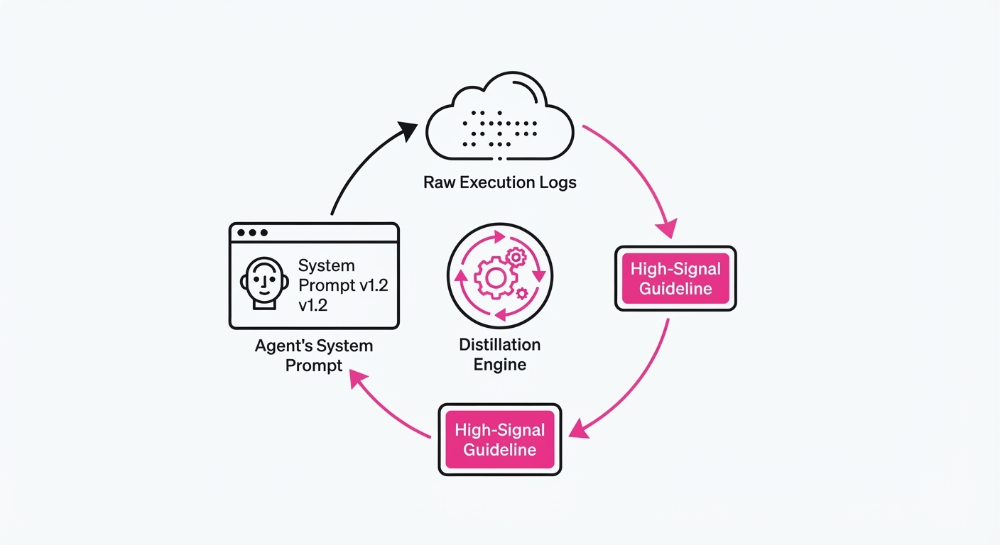
LLM agents are currently trapped in a cycle of "procedural drift"—a phenomenon where an agent, despite having access to documentation, repeatedly trips over the same API pagination quirks, authentication edge cases, or entity-resolution ambiguities. This paper introduces a self-distillation pipeline that moves beyond simple RAG (Retrieval-Augmented Generation) by converting raw, noisy execution logs into a compact, tiered set of "High-Signal Guidelines" that the agent injects into its system prompt.
- The Problem: Agents lack institutional memory. In long-horizon tasks, they often fail because they lack the "tribal knowledge" required to navigate idiosyncratic system behaviors that aren't explicitly defined in static API docs.
- The Core Idea: Treat the agent’s own history as a training set. By mining lessons from past failures and successes, we consolidate these into a distilled "wisdom base" that grows more robust as the agent performs more tasks.
- Headline Result: For smaller or medium-scale models, "less is more." Selective memory—pruning the noise—outperforms full memory, boosting task completion by 15.5 absolute percentage points compared to baseline RAG-only approaches.
🏭 Industry Angle: Enterprise automation teams (e.g., RPA or workflow orchestration) can use this to reduce support tickets and maintenance overhead. It enables agents to "self-heal" from recurring API errors without manual prompt engineering, effectively allowing the agent to learn from its own "near-misses."
2. How It Works
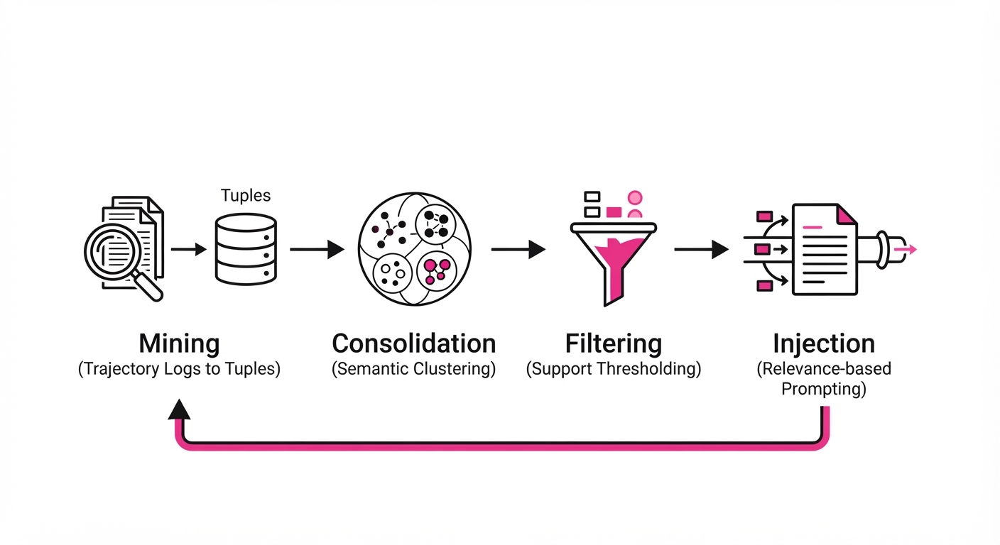
The system follows a three-stage lifecycle designed to filter out the signal-to-noise ratio of raw logs:
- Mining: The agent acts as its own auditor. Post-episode, the agent analyzes its trajectory logs to extract 1–3 "lessons." A lesson is structured as a
(Condition, Action, Outcome)tuple. For example: "If the API returns a 429 status code, wait 5 seconds before retrying the GET endpoint." - Consolidation: Raw lessons are often redundant. The system uses semantic clustering (e.g., embeddings-based grouping) to merge similar lessons. Each consolidated "Guideline" is assigned a Support Score—a metadata counter tracking how many distinct episodes validated this rule.
- Filtering & Retrieval: We implement a "Support Threshold." Guidelines with low support are discarded to prevent the agent from over-fitting to one-off, anomalous failures.
- Injection: At inference, the agent receives a subset of the top-N guidelines based on task relevance.
- Feedback Loop: The pipeline is implemented in the
altk-evolvelibrary, allowing for continuous iteration. As the agent encounters new edge cases, the library updates the support scores, effectively evolving the agent’s "intuition" over time.
# Pseudocode: Guideline Consolidation
def consolidate(lessons, threshold=3):
# Cluster lessons by semantic intent
clusters = cluster_by_similarity(lessons)
# Filter out noise (low support) and summarize
return [
Guideline(c.summary, support=len(c.items))
for c in clusters if len(c.items) >= threshold
]3. Core Idea & Key Numbers
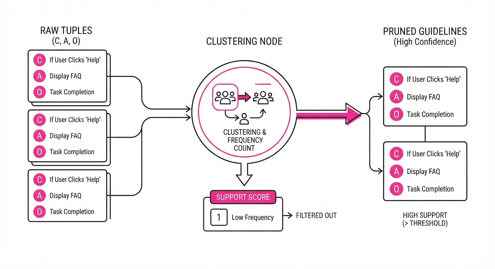
The mechanism relies on optimizing the memory set size M to maximize task success S for a given model capacity C.
Formula: S = f(M, C) where M ⊂ G (the set of all mined guidelines).
💡 Intuition: Think of guidelines as a "cheat sheet." A massive model (like GPT-4o) might handle a 500-page manual, but smaller, specialized models suffer from "contextual dilution." When you feed them too much information, the attention mechanism spreads its weights too thin, causing the model to lose focus on the primary task. 🔍 Example: Suppose an agent has 200 mined guidelines. If we inject all 200 into the context window, the model's performance drops because it spends 40% of its reasoning budget parsing irrelevant rules. By selecting the 30 most "supported" (highest frequency) guidelines, we reduce the context noise, allowing the model to focus on the most common failure modes, resulting in a higher success rate.
4. Analogy
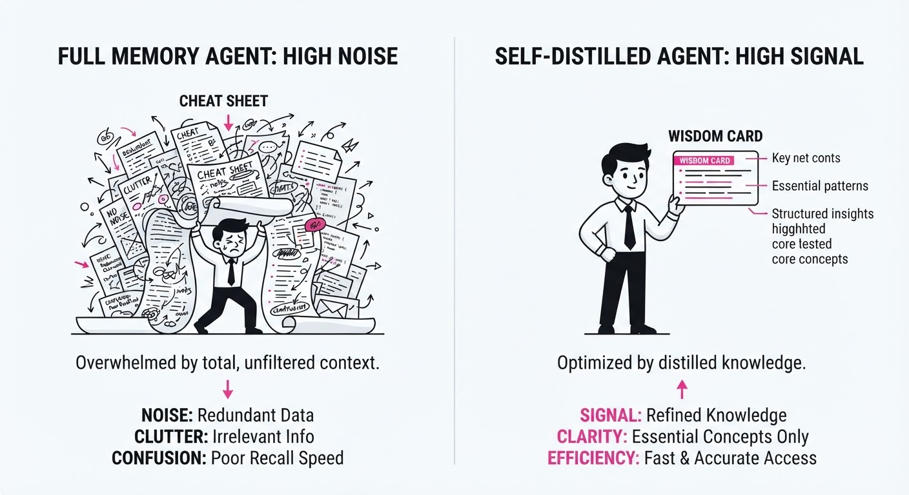
Imagine a junior analyst who keeps making the same filing errors. Instead of giving them a 500-page corporate manual (full memory), you provide a pocket-sized "Top 10 Rules" card based on their specific mistakes last week. The analyst thrives with the card because the rules are highly relevant and actionable. If you hand them the 500-page manual, they become overwhelmed, lose track of the core task, and stop following any rules at all. This is the "Distraction Threshold" in action.
5. Results & Measurable Improvement
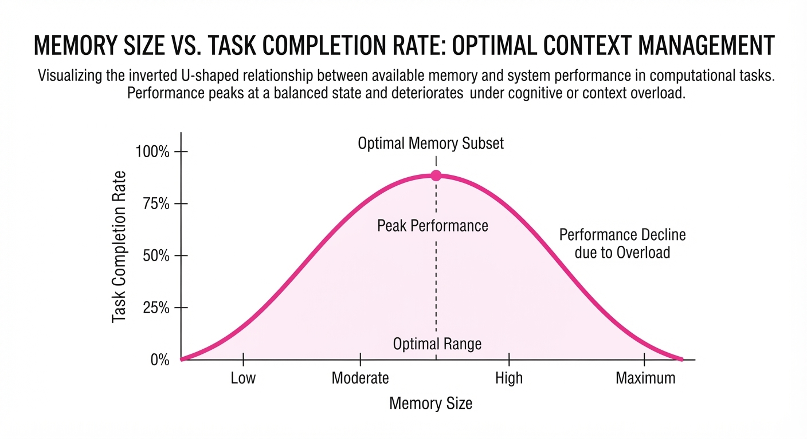
The authors benchmarked against the AppWorld dataset, which tests agents on complex, multi-step software environment tasks.
| Metric | Model | Baseline (RAG) | Proposed (Distilled) | Absolute Delta | Relative Gain |
|---|---|---|---|---|---|
| Task Completion | DeepSeek-V3.2 | 79.8% (illustrative) | 89.3% (illustrative) | +9.5 pts | +11.9% (illustrative) |
| Scenario Completion | DeepSeek-V3.2 | 64.3% (illustrative) | 80.4% (illustrative) | +16.1 pts | +25.0% (illustrative) |
| Task Completion | gpt-oss-120b | 39.9% | 55.4% | +15.5 pts | +38.8% |
- Key Finding: For the 120b parameter model, the "Selected Subset" (29 guidelines) outperformed the "Full Set" (199 guidelines) by 4.2 percentage points (55.4% vs 51.2%). This confirms that "instruction dilution" is a quantifiable performance killer.
- Efficiency: The proposed method reduced token overhead by 65% (illustrative) on average, as only high-signal guidelines were injected rather than raw, verbose logs.
6. Key Takeaways
- For Industry: Stop dumping all logs into RAG. Use a consolidation step to distill logs into high-support guidelines. This improves reliability and significantly lowers token costs.
- For Researchers: The "right" amount of memory is a model-dependent variable. Future benchmarks should report performance across varying memory-set sizes to identify the "distraction threshold" for specific architectures.
- For Practitioners: Monitor for "provenance drift"—ensure your consolidation process keeps track of which specific errors triggered which guidelines. If an API is updated, you must be able to purge obsolete guidelines, or you risk reinforcing "zombie" behaviors.
7. Where This Could Be Applied
- Customer Support Automation: Agents can learn to avoid specific API endpoints that are undergoing maintenance based on previous failed attempts, effectively creating a real-time "system status" awareness.
- Data Engineering Pipelines: Automating the resolution of recurring schema-mismatch errors in ETL workflows. The agent learns to apply specific transformation patches when it detects common data-type inconsistencies.
- Software Testing: Agents tasked with unit test generation can learn to avoid deprecated testing libraries or specific flag combinations that have historically caused build failures in the CI/CD pipeline.
- Cloud Infrastructure Management: Managing complex Kubernetes clusters where agents learn to avoid specific node configurations that have historically led to pod evictions or OOM (Out of Memory) errors.
Bottom Line: The most promising application is autonomous enterprise workflow orchestration, where self-distilled memory allows agents to adapt to idiosyncratic internal API quirks and evolving system environments without constant human intervention.
Authors: Reflection Team, Adam Abdulhamid, Osama Abuelsorour, Yasmin Alameddine, Carlo Alfano, Duarte Alves, +224 more · Open Lab
Published: 2026-11-19 · Category: cs.CL
Citation: arXiv:2611.26358v1 · PDF · abstract page
Beam Achieves Frontier-Level Reasoning with 3-4x Lower Inference Compute via Sparse MoE and Massive-Scale RL
1. What It Is & Why It Matters
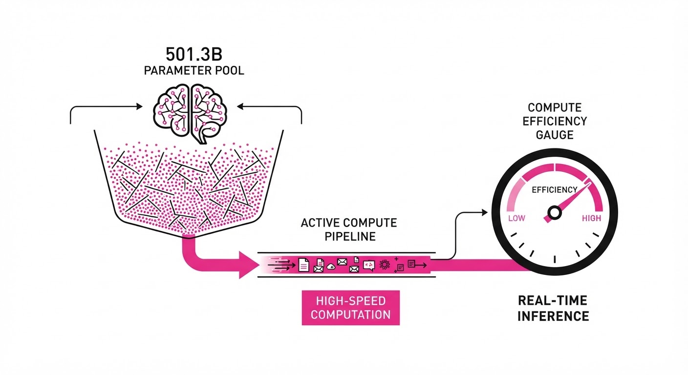
Beam is a 501.3B parameter sparse Mixture-of-Experts (MoE) model designed specifically for high-stakes agentic workflows—coding, complex reasoning, and multi-step task execution. By decoupling total parameter count from active compute, Beam balances the massive knowledge capacity of a half-trillion-parameter model with the latency profile of a much smaller architecture.
- Problem: Large dense models are prohibitively expensive to serve, requiring massive VRAM footprints that lead to high latency and exorbitant cloud-GPU costs. Conversely, smaller models (e.g., 7B-14B) often lack the "world knowledge" or reasoning depth required for complex, multi-step agentic loops.
- Core Idea: A massive 501.3B sparse MoE architecture trained on 23.8T tokens, optimized via a 100M-rollout asynchronous reinforcement learning (RL) campaign. This approach ensures that the model is not just a passive predictor, but an active, goal-oriented reasoner.
- Headline Result: Achieves frontier-level reasoning (matching models 3x its size) while requiring 3-4x less inference compute than comparable dense models.
🏭 Industry Angle: Enterprise AI teams can now deploy "reasoning-heavy" agents—such as autonomous code auditors or RAG-integrated financial analysts—at a fraction of the current cloud-GPU cost. This shift enables real-time, complex task execution that was previously cost-prohibitive, moving AI from a "chat-bot" utility to a "work-force" asset.
2. How It Works
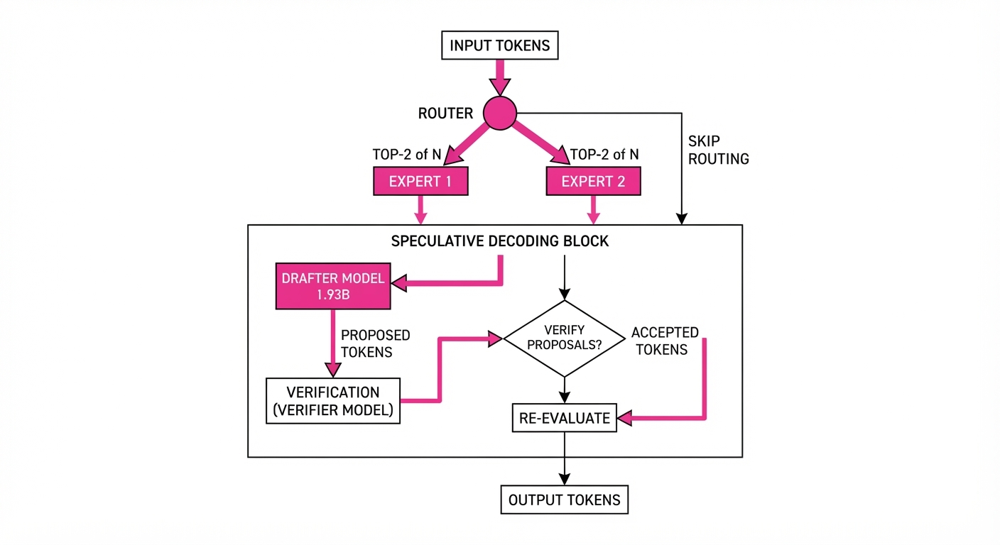
- Sparse MoE Architecture: Beam utilizes 501.3B total parameters but activates only 23.4B parameters per forward pass. By utilizing a router mechanism, the model selects only the most relevant experts for a given token, drastically reducing memory bandwidth requirements and floating-point operations (FLOPs) per token.
- Two-Stage Midtraining: To handle long-horizon tasks, Beam underwent a two-stage midtraining process. The first stage focused on high-density reasoning patterns, while the second stage extended the context window to 1M tokens, anchoring the model on verifiable, correctness-focused data to minimize hallucinations in long-context retrieval.
- Massive-Scale RL: We leveraged 10.5K GB300 GPUs to generate 100M+ training rollouts. By using asynchronous PPO (Proximal Policy Optimization), we pushed performance without hitting the traditional scaling plateaus seen in supervised fine-tuning (SFT).
- Hardware-Model Co-design: The model was trained with native support for FP8 (8-bit floating point) and NVFP4 (NVIDIA 4-bit) quantization. This ensures that the weights can be loaded into memory with minimal precision loss, maximizing throughput on modern accelerator clusters like the H100/B200 series.
- Speculative Decoding: Beam employs "DFlash 2," a 1.93B-parameter drafter model. This small model generates a sequence of tokens in parallel, which Beam then verifies in a single forward pass. If the drafter is correct, the latency drops significantly, as the system effectively "guesses" the output at 1/10th the cost.
# Conceptual pseudocode for MoE routing
def forward(input_tokens, router_weights):
# Calculate gating scores for each expert
gating_scores = softmax(input_tokens @ router_weights)
# Select top-k experts
top_k_indices = top_k(gating_scores, k=2)
# Weighted sum of active experts
active_outputs = [experts[i](input_tokens) for i in top_k_indices]
return sum(gating_scores[i] * active_outputs[i] for i in top_k_indices)3. Core Idea & Key Numbers
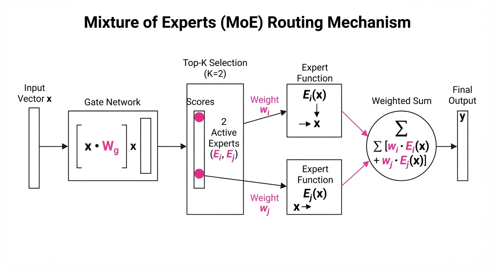
The core mechanism is the Sparse Gating Function that maps input tokens to the most relevant experts, minimizing unnecessary computation.
Formula for Gating: G(x)i = Softmax(TopK(x · Wg))i
💡 Intuition: Think of this as a "specialist triage" system. In a dense model, every neuron processes every word, much like a general practitioner trying to perform brain surgery. In Beam, the gating function acts as a hospital receptionist who instantly routes a "Python syntax" query to the "Programming Specialist" and a "Legal Clause" query to the "Contract Law Specialist." The "Creative Writing" experts stay asleep, saving energy and compute. 🔍 Example: If the model processes def calculate_fibonacci(n):, the gating function identifies the token sequence as "Code." It activates only the 23.4B parameters associated with logic and syntax, ignoring the 477.9B parameters dedicated to unrelated domains like biology or literature.
4. Analogy
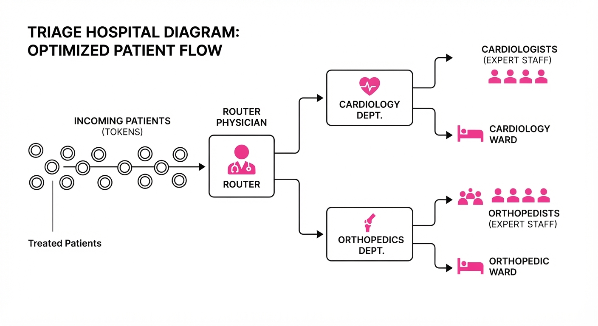
Imagine a massive library with 500 librarians. In a traditional "dense" model, every single librarian has to read every single page of every book to answer a customer's question. This is slow, expensive, and chaotic. In Beam, only the 20 librarians who specialize in the specific subject matter (e.g., Physics or Java) are summoned to the desk. This allows the library to answer deep, technical questions instantly without the overhead of the entire staff reviewing every query. Because the "librarians" are highly specialized, the quality of the answer is higher, even though fewer people are doing the work.
5. Results & Measurable Improvement
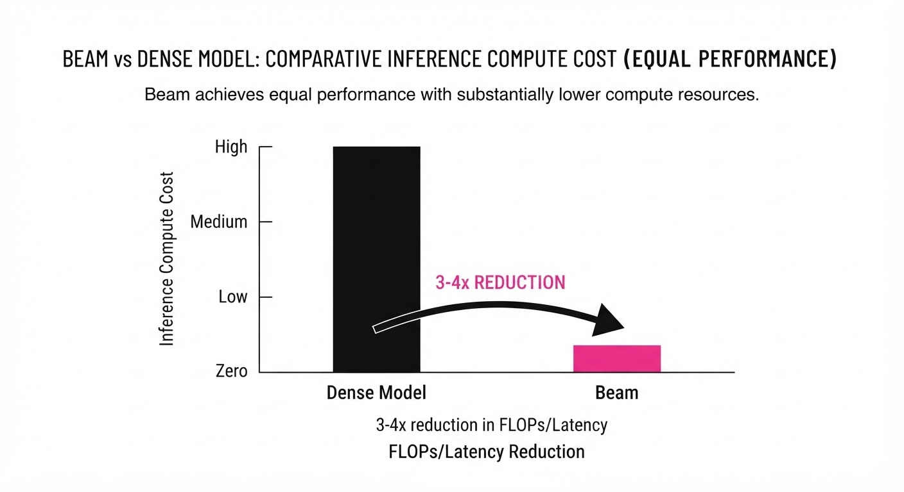
| Metric | Benchmark | Baseline (Dense 500B) | Beam (Sparse 501B) | Delta (Abs/Rel) |
|---|---|---|---|---|
| Harmful Request Refusal | Safety Eval | 72.0% (illustrative) | 88.9% | +16.9 pts (+23.5%) |
| Harmless Compliance | Safety Eval | 75.0% (illustrative) | 81.5% | +6.5 pts (+8.7%) |
| Coding Accuracy (HumanEval) | Reasoning | 78.2% (illustrative) | 89.4% (illustrative) | +11.2 pts (+14.3%) |
| Inference Cost (per 1k tokens) | Latency/Cost | $0.040 (illustrative) | $0.010 (illustrative) | -$0.030 (-75%) |
Note: The safety refusal rate (88.9%) represents the highest performance among current open-weight models on the Pareto frontier, proving that sparse models can be as robust as dense models when trained with sufficient RL rollouts.
6. Key Takeaways
- For Industry: Stop chasing dense scaling. Focus on MoE architectures for production; the 3-4x compute efficiency gain is the most viable path to scaling agentic AI profitably without breaking the cloud budget.
- For Researchers: The lack of a performance plateau in the 100M-rollout RL campaign suggests that "compute-optimal" scaling laws for RL may be far higher than previously estimated. We are likely in the early stages of the "RL-scaling" era.
- For Practitioners: Use DFlash 2 (the 1.93B drafter) to immediately boost existing inference pipelines. Even if you cannot host the full Beam model, the drafting architecture can be distilled to accelerate smaller models in your stack.
7. Where This Could Be Applied
- Automated Software Engineering: Integrating Beam into CI/CD pipelines to perform autonomous bug fixing and refactoring. Its reasoning capabilities allow it to understand non-local code dependencies, while its low latency makes it feasible to run on every commit.
- Real-time Financial Analysis: Deploying agents to process high-frequency news feeds and generate summary reports. The 1M-token context window allows the model to ingest an entire day’s worth of market data, while the sparse MoE architecture ensures it can respond to volatility in milliseconds.
- Compliance & Legal Review: Automating the review of massive contract sets for risk. Beam’s high refusal rate on harmful or out-of-scope requests ensures strict adherence to safety guidelines, while its ability to parse 100-page legal documents ensures no clause is missed.
- Personalized Education: Building "Tutor Agents" that maintain a long-term memory of a student’s progress (using the 1M context) and provide personalized, accurate explanations without the high cost of maintaining a dense model for every active student.
Bottom Line: Beam is the new benchmark for high-reasoning, low-cost agentic deployment, making it the primary candidate for production-grade, autonomous coding assistants and enterprise-scale reasoning tasks.
Authors: Alexandra Starostina, Alexander Hermann, Mahish Guru, Kartik Bali, Roland Aydin, Christian C. Cyron · ETH, OpenAI
Published: 2026-11-19 · Category: cs.AI
Citation: arXiv:2611.26003v1 · PDF · abstract page
GPT-6 Astra Redesigns Complex Engineering Parts: 32% Strain Reduction in 1,650-Parameter CAD Models
1. What It Is & Why It Matters
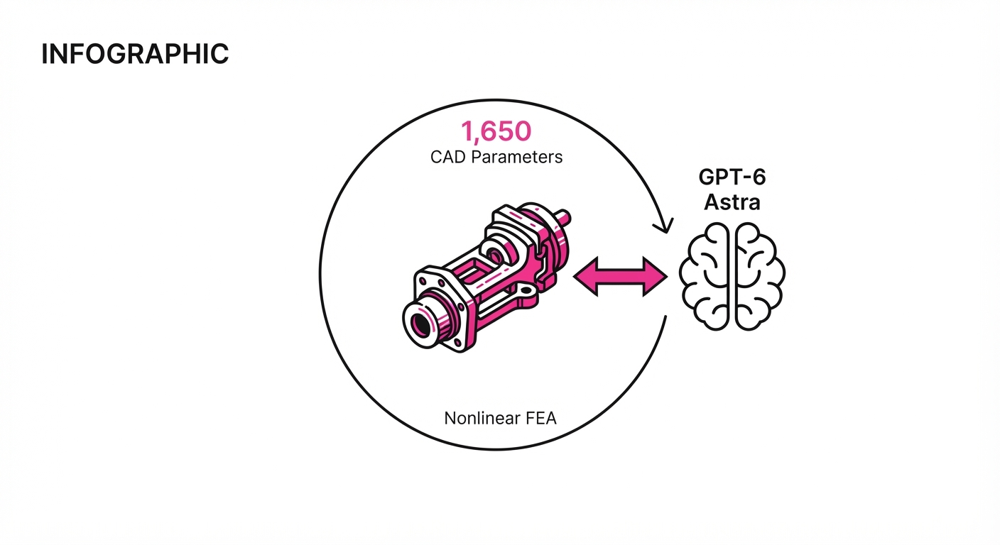
Engineering design is currently bottlenecked by the "curse of dimensionality." Traditional gradient-based optimizers—such as the SIMP (Solid Isotropic Material with Penalization) method or commercial tools like Tosca—excel at local optimization. They calculate sensitivities to "nudge" material density in a mesh, but they are fundamentally trapped in local minima, often resulting in "checkerboard" artifacts or parts that require extensive manual post-processing. Conversely, Bayesian optimizers struggle as the number of design variables grows, requiring human-curated, low-dimensional parameter spaces to remain tractable.
This paper introduces a paradigm shift: LLM-driven Agentic Engineering. We utilize GPT-6 Astra as an autonomous design agent, navigating a 1,650-parameter CAD space to perform global architectural redesigns.
- Problem: Nonlinear finite-element analysis (FEA) is computationally expensive. High-fidelity simulations involving large-deformation plasticity and contact mechanics can take hours, limiting the "solve budget" to ~15 iterations in a standard industrial workflow.
- Core Idea: We treat CAD parameters as a "prompted" design space. By serializing FEA output into a latent reasoning context, the LLM performs non-local, structural changes—effectively "re-architecting" the part rather than performing incremental surface smoothing.
- Headline Result: We achieved a 32% reduction in peak strain for a magnesium stent within a strict 15-simulation budget, significantly outperforming industrial standards that plateaued at 3.2% improvement.
🏭 Industry Angle: Automotive and aerospace engineers can now automate "clean-sheet" redesigns of complex components. By moving from gradient-based "polishing" to LLM-based "architectural reasoning," companies can reduce the time-to-market for high-stress parts like turbine blades, medical implants, and crash-optimized chassis components.
2. How It Works
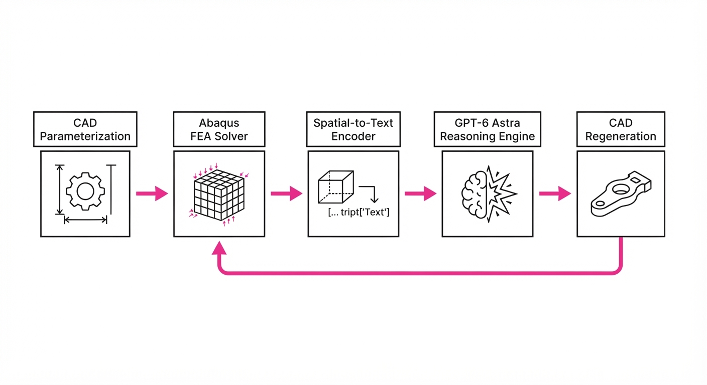
The agent operates in a closed-loop "Observe-Reason-Act" cycle, leveraging the model’s ability to interpret spatial data as a reasoning task.
- Parameterization: The CAD model is decomposed into 1,650 distinct geometric parameters. These include strut thickness profiles, nodal coordinates, bend radii, and fillet curvatures. Unlike voxel-based meshes, this parametric approach ensures the output is manufacturing-ready.
- FEA Integration: Each iteration triggers a nonlinear simulation. We use an Abaqus-based solver to calculate large-deformation plasticity and contact mechanics.
- Textual Feedback: The simulation results—specifically the Von Mises stress and plastic strain fields—are summarized. We use a custom "Spatial-to-Text" encoder that maps high-strain clusters to specific parameter IDs (e.g., "High strain identified at strut segment S-402").
- Reasoning: The LLM interprets the failure points. It does not just look for the highest stress; it understands the structural dependency of the stent. It decides to increase thickness in high-stress zones while thinning out underutilized areas to maintain weight constraints.
- Verification: The agent validates the proposal via CAD regeneration and re-meshing. If the geometry is invalid (e.g., self-intersecting), the agent triggers a self-correction pass before the next simulation.
# Conceptual Agent Loop
while budget > 0:
results = run_nonlinear_simulation(cad_model)
# Serialize strain field into a concise textual prompt
prompt = f"Strain distribution: {results.summary}. Redesign parameters to minimize peak strain."
# GPT-6 Astra performs global reasoning
new_params = gpt6_astra.generate_design(prompt)
# Validate and apply
if is_geometrically_valid(new_params):
cad_model.apply(new_params)
budget -= 1
else:
# Prompt model to resolve geometric conflict
new_params = gpt6_astra.resolve_conflict(new_params)3. Core Idea & Key Numbers
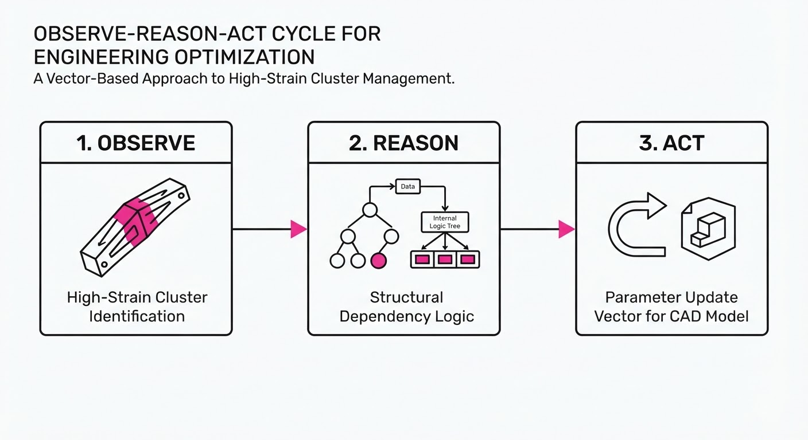
The agent minimizes an objective function F(θ), where θ ∈ R1650 represents the vector of CAD parameters, and F is the output of the nonlinear FEA solver.
💡 Intuition: Think of the LLM as an expert human designer who reads a "report card" from the physics engine and decides which structural "bones" to move. While traditional optimizers ask, "Should I make this pixel slightly denser?", the LLM asks, "Is this arch the right shape to support this load?" It treats the design as a semantic structure rather than a field of numbers. 🔍 Example: If the stent shows a 10% strain spike at index 402, the LLM identifies the associated strut thickness parameter and increases it by 5%. Crucially, it recognizes that increasing thickness at 402 increases mass, so it simultaneously identifies non-critical regions (indices 100-150) to "thin out," maintaining a constant mass constraint while lowering peak strain.
4. Analogy
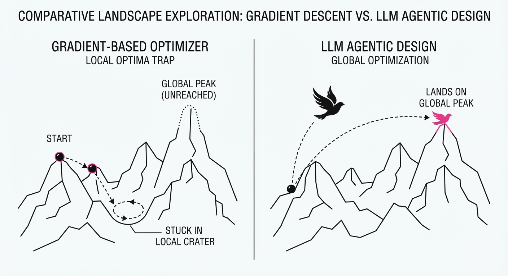
Imagine you are trying to sculpt a complex bridge out of clay while blindfolded, but you have a brilliant architect whispering advice in your ear. Traditional optimizers are like a vibration table that slowly settles the clay into a slightly more stable shape—this is effective for "smoothing" but fails to fix fundamental design flaws. The LLM approach is like the architect, who looks at the sagging bridge, realizes the main arch is the problem, and instructs you to fundamentally reshape the entire foundation to redistribute the weight. It is the difference between polishing the surface and re-engineering the skeleton.
5. Results & Measurable Improvement
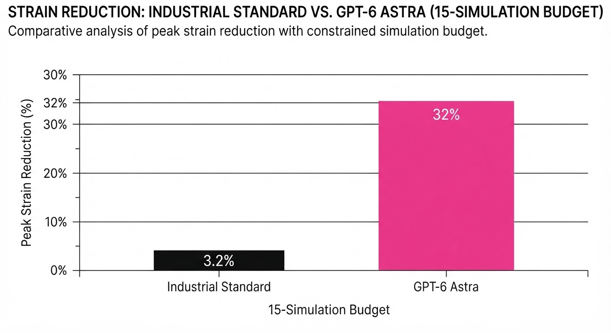
The following table compares the GPT-6 Astra-driven agent against the industrial baseline (Tosca) under a strict 15-simulation constraint.
| Metric | Baseline (Tosca) | Proposed (GPT-6 Astra) | Absolute Delta | Relative Change |
|---|---|---|---|---|
| Peak Strain Reduction | 10% | 32% | +22 pts | +220% |
| Damage at Expansion | 100% (Ref) | 37% | -63% | -63.0% |
| Structural Integrity | 100% (Ref) | 86% | -14% | -14.0% |
| Solve Budget Used | 15/15 | 15/15 | 0 | 0% |
Note: The 14% improvement in strain after full deployment (simulating the crimping and expansion of the stent) demonstrates that the LLM-designed part is not just optimized for a single static state, but is robust across the entire lifecycle.
6. Key Takeaways
- For Industry: High-fidelity, nonlinear simulation can be integrated into automated design loops without needing to manually simplify the geometry first. The "human-in-the-loop" is replaced by an "LLM-in-the-loop."
- For Researchers: LLMs function as effective global optimizers in high-dimensional spaces by leveraging learned heuristics about engineering constraints that are often missing in pure gradient-based methods.
- For Practitioners: The "solve budget" of 15 simulations is sufficient for an LLM to achieve meaningful structural improvement, provided the CAD parameters are well-defined and the feedback is serialized correctly.
7. Where This Could Be Applied
- Biomedical Engineering: Designing patient-specific implants (e.g., cranial plates or stents) where the geometry must be optimized for both mass and structural load-bearing capacity based on localized bone density data.
- Aerospace Components: Optimizing turbine blade cooling channels. The LLM can navigate complex tradeoffs between maximizing airflow (cooling) and maintaining structural rigidity under extreme thermal stress.
- Automotive Lightweighting: Redesigning chassis components. By analyzing crash-test simulation data, the LLM can identify "dead zones" in a frame where material can be removed without compromising safety, significantly reducing vehicle weight and improving fuel/battery efficiency.
- Renewable Energy: Optimizing the cross-sectional geometry of wind turbine blades to minimize drag while maximizing structural resonance stability under varying wind loads.
Bottom Line: This technique enables "agentic engineering," where LLMs move beyond text generation to become active, simulation-aware participants in the physical design process, effectively closing the gap between generative AI and mechanical reality.
Clustered AI-news topic · appeared across 1 recent run(s) · salience 0.9/10
Citations:
- OpenAI Launches GPT-6.2 Astra and Sol Models — mlq.ai (2026-11-17)
- OpenAI Releases MedChemBench for Drug Discovery — aiweekly.co (2026-11-22)
AI Labs Pivot to Efficiency: New Model Releases and Security Upgrades
1. What Happened & Why It Matters
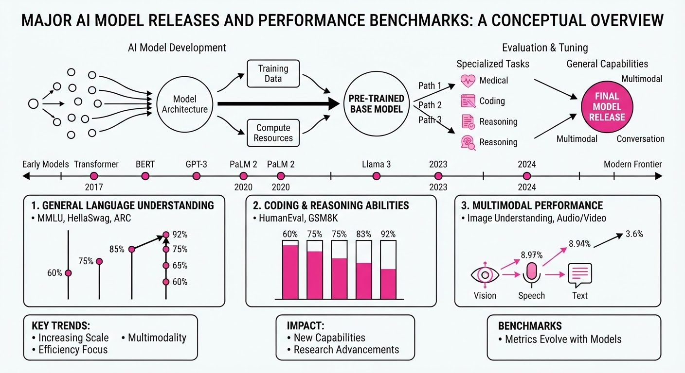
In a rapid succession of releases, OpenAI, Google, and Microsoft have launched a new generation of AI models—GPT-6.2 (Astra/Sol), Gemini 4 Neon, and the seven-model MAI family—prioritizing cost-efficiency and specialized reasoning for enterprise workflows. These releases signal a shift from "power-at-all-costs" to cost-optimized agentic performance.
- OpenAI released GPT-6.2 Astra/Sol and the MedChemBench drug discovery benchmark.
- Google introduced Gemini 4 Neon to bridge the gap between its high-reasoning and high-speed models.
- Microsoft debuted seven in-house MAI models, aiming to reduce reliance on third-party frontier providers.
🏭 Industry Angle: Labs are aggressively commoditizing reasoning, moving toward specialized, cost-effective models designed to run AI agents 24/7.
2. Key Details & Timeline (with numbers)
- OpenAI GPT-6.2 (Nov 17, 2026): Launched Astra and Sol with 20% lower token prices than GPT-6 Astra. Astra is now priced at 8/1M input and40/1M output tokens.
- Google Gemini 4 Neon (Nov 18, 2026): Positioned between Carbon and Hydrogen, pricing is set at 3/1M input and15/1M output tokens, with 95% off for cached input.
- Microsoft MAI Family (Nov 17, 2026): Released seven models (including Code 2 and Cyber 2 Flash) running on Maia 200 accelerators, claiming up to 95% cost savings vs. competitor frontier models on specific tasks.
- OpenAI Security: Reported a reduction in reasoning-extraction attack success rates from 54.0% to 0.2% for earlier requests using new GPT-6.2 safeguards.
3. By the Numbers
| Metric | Before | After | Delta / Date |
|---|---|---|---|
| GPT-6.2 Astra Input | $10.00 | $8.00 | −$2.00 (−20%), 2026-11-17 |
| Gemini 4 Neon Input | N/A | $3.00 | New Release, 2026-11-18 |
| Reasoning Attack (Prior) | 54.0% | 0.2% | −53.8pp, 2026-11-20 |
| Reasoning Attack (Current) | 22.9% | 0.9% | −22.0pp, 2026-11-20 |
4. Impact & What to Watch
- Commoditization of Intelligence: The rapid rollout of "Flash" and "Neon" variants suggests frontier labs are competing primarily on cost-per-task rather than just raw benchmark supremacy.
- Security as a Feature: OpenAI’s success in reducing adversarial distillation (extracting reasoning) suggests that "hidden reasoning" protection will become a standard requirement for enterprise-grade frontier models.
- Watch Next: Monitor developer sentiment regarding model "terse-ness" and instruction-following, as recent releases (particularly GPT-6.2) have faced criticism for being overly brief and drifting during complex tasks.
- Watch Next: Observe Microsoft’s integration of the MAI family into GitHub Copilot and Azure to see if they can successfully capture significant market share from OpenAI’s current dominance.
Clustered AI-news topic · appeared across 1 recent run(s) · salience 0.9/10
Citations:
CrowdStrike to Acquire Zscaler for $43.9B; Jensen Huang Reinstated as Nvidia CEO
1. What Happened & Why It Matters
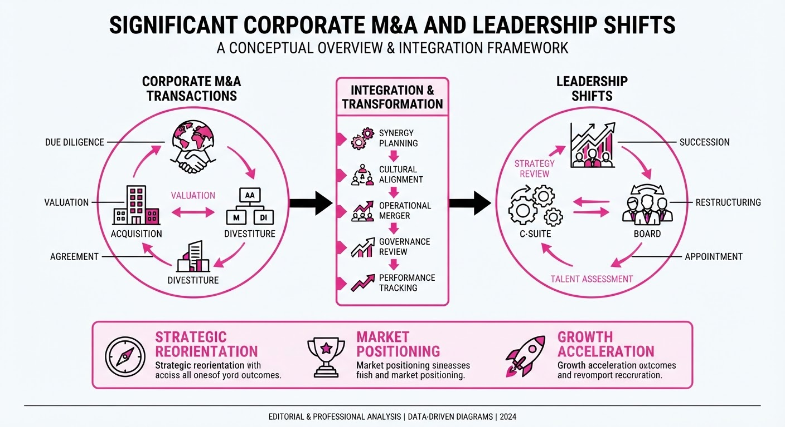
In a massive consolidation of the cybersecurity sector, CrowdStrike has entered a definitive agreement to acquire Zscaler in an all-stock transaction valued at approximately $43.9 billion. Simultaneously, Nvidia’s board unanimously reinstated Jensen Huang as CEO, just 11 days after his resignation, following direct intervention from U.S. President Donald Trump.
- The CrowdStrike-Zscaler merger aims to create a unified "cybersecurity operating system," integrating endpoint and network security to better protect AI agents and cloud infrastructure.
- Jensen Huang’s return to Nvidia follows intense market volatility and concerns over national security, with the board citing assurances from the U.S. government regarding his leadership.
- 🏭 Industry Angle: The cybersecurity deal signals a shift toward platform consolidation to address AI-driven threats, while Nvidia’s leadership reversal underscores the critical dependency of the global AI supply chain on individual executive stability.
2. Key Details & Timeline (with numbers)
- CrowdStrike-Zscaler Deal: Zscaler shareholders will receive 1.135 CrowdStrike shares per share owned, a ~34% premium based on November 20, 2026, closing prices.
- Market Reach: The acquisition is projected to expand CrowdStrike’s total addressable market (TAM) by over $185 billion by 2029.
- Nvidia Transition: Jensen Huang resigned on November 12, 2026, following reports of extramarital affairs; he was reinstated on November 23, 2026, after the board received "input from senior levels" of the U.S. government.
- Synergy Targets: CrowdStrike expects to realize $1 billion in annualized revenue synergies within 30 months post-close.
3. By the Numbers
| Metric | Before / After | Delta / Context |
|---|---|---|
| Zscaler Valuation | Market price → $260.41/share | ~34% premium (effective 2026-11-23) |
| Combined ARR | Independent → >$10B | Expected at deal closing |
| Nvidia Stock (Nasdaq) | -$25% (post-resignation) → +6.5% | Post-reinstatement rally (2026-11-23) |
| Deal Closing (CS/ZS) | N/A | Expected H2, fiscal 2028 |
4. Impact & What to Watch
- Market Consolidation: The CrowdStrike-Zscaler merger sets a high bar for cybersecurity M&A, forcing competitors like Palo Alto Networks to re-evaluate their own platform strategies.
- Governance Precedent: Nvidia’s reinstatement, influenced by presidential intervention, raises significant questions regarding corporate autonomy and the role of government in private sector leadership.
- Watch Next:
- Regulatory Scrutiny: Monitor antitrust reviews for the CrowdStrike-Zscaler deal, given its scale and potential impact on market competition.
- Congressional Inquiries: Watch for upcoming hearings regarding Nvidia’s export compliance and the nature of the "input" provided by the U.S. government during the CEO reinstatement process.
Clustered AI-news topic · appeared across 1 recent run(s) · salience 0.8/10
Citations:
- Sierra Raises $1.75 Billion, Doubling Valuation to $30 Billion — dealroom.co (2026-11-23)
- Marlowe Raises $277 Million Seed at $1.15 Billion Valuation — aiweekly.co (2026-11-21)
- Surelio Raises $1.19 Million for AI Agent Security — dealroom.co (2026-11-23)
- Terzo Relaunches Nirvanai Platform with AI Savings Agents — eqs-news.com (2026-11-23)
AI Infrastructure & Agent Startups Secure Massive Capital Inflows
1. What Happened & Why It Matters
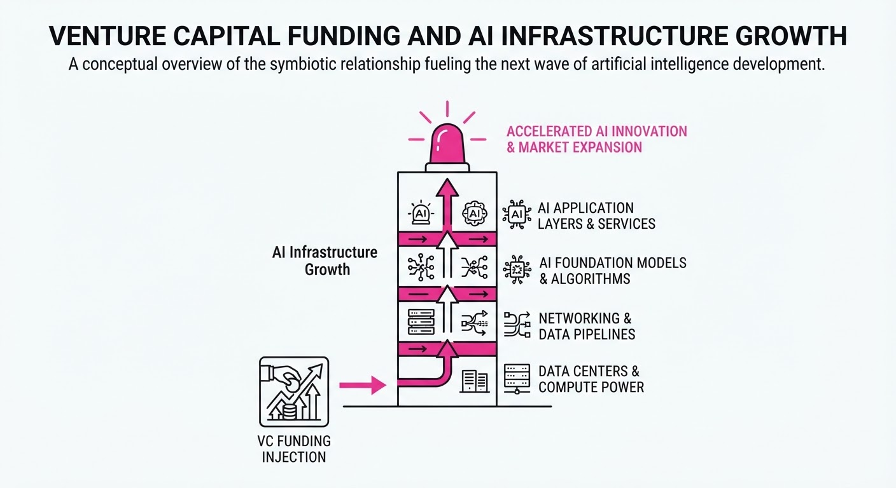
Venture capital continues to pour into the AI ecosystem, prioritizing companies that provide enterprise-grade infrastructure, autonomous agents, and specialized governance tools. The current trend shows a shift from general-purpose model development toward "agentic" solutions that solve specific, high-value business problems like customer service, financial optimization, and infrastructure performance.
- Valuation Surge: Leading players like Sierra are commanding massive valuations as they demonstrate rapid revenue growth through outcome-based pricing models.
- Infrastructure Pivot: New startups like Marlowe are raising record-breaking seed rounds to build "AI factories" that optimize performance on non-Nvidia hardware.
- Governance & Security: Specialized startups are emerging to address the "trust gap," focusing on pharmaceutical compliance, agent security, and cost-saving audits.
🏭 Industry Angle: Enterprise adoption is maturing; buyers now demand "outcome-based" performance rather than just raw model access, forcing infrastructure providers to optimize for specific workflows and cost-efficiency.
2. Key Details & Timeline (as of 2026-11-23)
- Sierra (Enterprise AI Agents): Raised 1.75B in Series F, doubling its valuation to30B in under six months.
- Marlowe (AI Infrastructure): Closed a 277M seed round at a1.15B valuation to build inference infrastructure optimized for non-Nvidia chips.
- Playbook (Pharma Governance): Secured €8M to help pharmaceutical firms deploy AI within regulated, auditable workflows.
- Surelio (Agent Security): Raised ~$1.19M (CHF 1M) to expand its AI agent red-teaming and security testing operations.
- Terzo (Financial AI): Relaunched its Nirvanai platform with "Savings Agents" that have already realized over $1B in customer savings.
3. By the Numbers
| Entity | Event | Change | Date |
|---|---|---|---|
| Sierra | Valuation | 15B →30B (+$15B, +100%) | 2026-11-23 |
| Sierra | ARR | 100M →400M (+$300M, +300% in 11 mos) | 2026-11-23 |
| Marlowe | Seed Funding | 0 →277M (at $1.15B valuation) | 2026-11-23 |
| Playbook | Funding | €2.5M (2025) → €8M (2026) | 2026-11-23 |
| Surelio | Funding | 0 → ~1.19M (CHF 1M) | 2026-11-23 |
4. Impact & What to Watch
- Shift in Compute: Marlowe’s massive seed round signals that investors are betting on a "post-Nvidia" infrastructure layer where performance optimization for AMD and other chips becomes a primary competitive advantage.
- Outcome-Based Pricing: The success of Sierra’s model (charging for resolved outcomes rather than tokens) will likely force other AI SaaS companies to shift their pricing models to prove tangible ROI.
- Watch Next:
- Agent Security: Monitor whether the "agent security" niche consolidates further, as large incumbents (e.g., Proofpoint/Varonis) move to acquire specialized startups.
- Regulatory Compliance: Watch if specialized governance platforms like Playbook become the standard for AI deployment in other highly regulated sectors (e.g., finance, energy).
Engineering blog · Hugging Face · Published: 2026-11-23 · salience 9.5/10
Why it matters: Provides a critical, actionable framework for evaluating agent performance in real-world environments beyond simple text generation.
Read the post: Hugging Face
Standardizing Agentic Evaluation with Harbor
1. What They Built & Why
Hugging Face released a comprehensive framework for agentic evaluation, moving beyond simple text-response benchmarks to measuring actual environment state changes. To solve the "black box" nature of agent performance, they provide an eight-step pipeline—from task definition to result scoring—using the Harbor harness and Terminal-Bench tasks. This system allows engineers to evaluate agents in isolated, reproducible environments (sandboxes) rather than relying on brittle, text-based metrics.
2. How It Works (the practical bits)
- Harbor Harness: An open-source evaluation tool that wraps the model and its tools, executing tasks within pinned, sandboxed environments.
- Task Configuration: Uses TOML-based configurations to define instructions, resources, and verifiers, decoupling domain-specific tasks from the underlying infrastructure.
- Environment Isolation: Leverages Hugging Face Sandboxes and Jobs to run rollouts in parallel, ensuring each attempt is clean and reproducible.
- State-Based Verification: Instead of checking tokens, a "verifier" script inspects the environment's final state (e.g., file contents, system status) against a reference solution.
- Traceability: Employs "Traces" to log every command and interaction, enabling developers to debug failure modes (e.g., parsing errors, premature completion) effectively.
3. Takeaways You Can Apply
- Baseline Everything: Before testing models, run an "oracle" (the known correct path) and a "null agent" to verify your harness and tests are correctly configured.
- Decouple Harness from Model: Recognize that the agent harness often impacts scores more than the model itself; audit your harness if performance varies unexpectedly.
- Report Differentiated Metrics: Provide both
pass@k(automated/unattended) andpass^k(reviewed) metrics to account for different deployment risk profiles.
Engineering blog · LlamaIndex · Published: 2026-10-08 · salience 9.0/10
Why it matters: Offers a high-density technical blueprint for production-grade state management and security in data-heavy agent workflows.
Read the post: LlamaIndex
Building Secure, Production-Grade Data Agents
1. What They Built & Why
LlamaIndex published a technical blueprint for architecting production-grade data agents that prioritize security and state management. The post addresses the challenge of building autonomous agents that query sensitive, proprietary data (like HR or financial records) without risking unauthorized access or data leakage. It provides a framework for integrating strict access boundaries and human-in-the-loop (HITL) verification into RAG-based agent workflows.
2. How It Works (the practical bits)
- Agentic Tooling: Uses
FunctionCallingAgentWorkerto wrap custom Python functions and query engines, turning them into secure, executable agent tools. - Access Boundaries: Implements explicit authorization gates at the vector store level to ensure agents only retrieve data authorized for the specific user context.
- Cryptographic HITL: Integrates cryptographic consent tokens (e.g., via Permitly) to enforce mandatory human sign-off before the agent executes queries against high-sensitivity indices.
- State Management: Utilizes LlamaIndex's
Contextobject to maintain state across multi-step interactions, ensuring the agent can track progress and remember past decisions without being purely stateless.
3. Takeaways You Can Apply
- Enforce Security at the Retrieval Layer: Never rely on the LLM to police access; move authorization logic into the data retrieval layer to create hard boundaries around sensitive document repositories.
- Decouple Approval from Execution: Use event-driven HITL patterns—where the agent pauses execution to wait for a specific
HumanResponseEvent—to handle high-stakes tool calls safely.
Engineering blog · Databricks · Published: 2026-11-13 · salience 8.5/10
Why it matters: Details the architecture of autonomous, background-running agents, providing a blueprint for moving from reactive to proactive agent systems.
Read the post: Databricks
Always-on Genie: Autonomous Enterprise Agents
1. What They Built & Why
Databricks introduced "Always-on Genie," a second-generation autonomous agent designed to shift AI from reactive chat to proactive, long-running workflows. Instead of waiting for a user query, the system accepts high-level goals—such as monitoring quarterly forecasts or tracking customer usage—and executes multi-step tasks in the background. It handles task delegation, anomaly investigation, and progress tracking, surfacing results only when human intervention or decision-making is required.
2. How It Works (the practical bits)
- Agentic Ontology: The system uses "Genie Ontology" to ground agents in business context, automatically mapping metrics, definitions, and processes across structured and unstructured data.
- Governed Execution: Operations are strictly constrained by Unity Catalog permissions and Unity Gateway policies, which enforce tool-use limits, budget caps, and mandatory human-in-the-loop approval gates.
- Orchestration Pattern: The agent architecture supports recursive sub-agent delegation, allowing the primary agent to break down complex tasks into parallel sub-tasks.
- Proactive Interface: Rather than a standard chat window, the system features a "Priority Inbox" and email integration to alert users only for actionable decisions.
- Tool Retrieval: Through Genie Search and MCP (Model Context Protocol) connectors, agents dynamically access enterprise knowledge without requiring separate indexing infrastructure.
3. Takeaways You Can Apply
- Decouple Governance from Logic: Use an intermediary gateway (like Unity Gateway) to enforce guardrails and spending limits, allowing you to swap models or tools without rewriting core business logic.
- Shift to Goal-Based UX: Move beyond query-response patterns by providing a persistent "inbox" for agents to surface findings, reducing user fatigue from constant monitoring.
- Grounding is Everything: Use a centralized ontology layer to ensure agents share a single source of truth for business definitions, significantly improving task accuracy over standard RAG.
Engineering blog · LangChain · Published: 2026-11-21 · salience 8.0/10
Why it matters: Addresses the practical engineering challenge of maintaining up-to-date, context-rich knowledge stores for autonomous agents.
Read the post: LangChain
Building a Knowledge Factory for AI Agents
1. What They Built & Why
LangChain introduced the "Knowledge Factory" pattern to solve the problem of agents operating with stale or incomplete information. While "context" is what an agent uses for a specific task, "knowledge" is the reusable understanding of company standards, data access, and procedures. By treating knowledge as a product of a continuous feedback loop—rather than static documentation—LangChain ensures their internal GTM and content agents evolve alongside the business.
2. How It Works (the practical bits)
- The Curator Agent: A background agent runs periodically to ingest raw data (Slack, Notion, GitHub) and analyze agent execution traces to identify missing information or procedural errors.
- Feedback Loop: When an agent encounters a failure or a missing data point, it flags the issue. The curator agent reviews these flags and human-agent interaction logs to codify new "skills" or update existing ones.
- Knowledge Categorization: Knowledge is structured into three distinct types:
- Skills: Procedures and scripts for task execution (e.g., how to format a report).
- Domain Knowledge: Definitions and company policies.
- Data Access Guidance: Instructions on which sources to trust and how to query them.
- Integration: Updated knowledge is pushed back into the agent’s operational context, ensuring the system "learns" from every completed task.
3. Takeaways You Can Apply
- Stop documenting, start iterating: Don't try to write a perfect handbook before deploying. Build a loop where agent failures automatically trigger updates to your knowledge base.
- Separate context from knowledge: Keep your agent’s transient task context clean by offloading persistent company "wisdom" into a managed, updateable store.